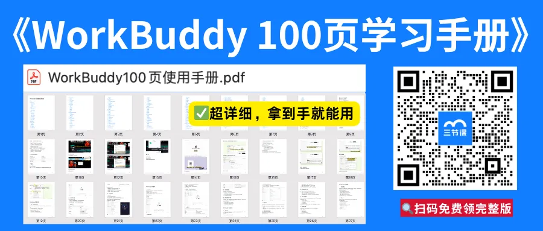
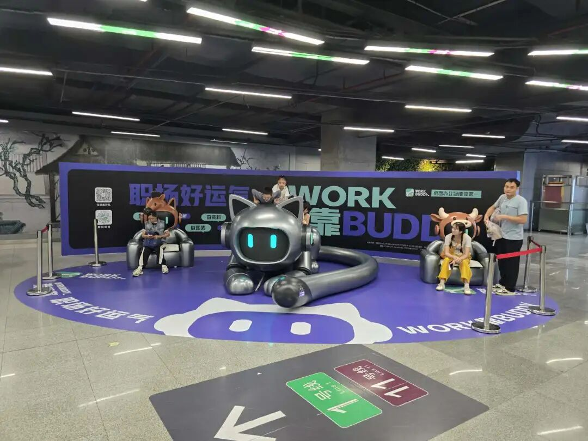
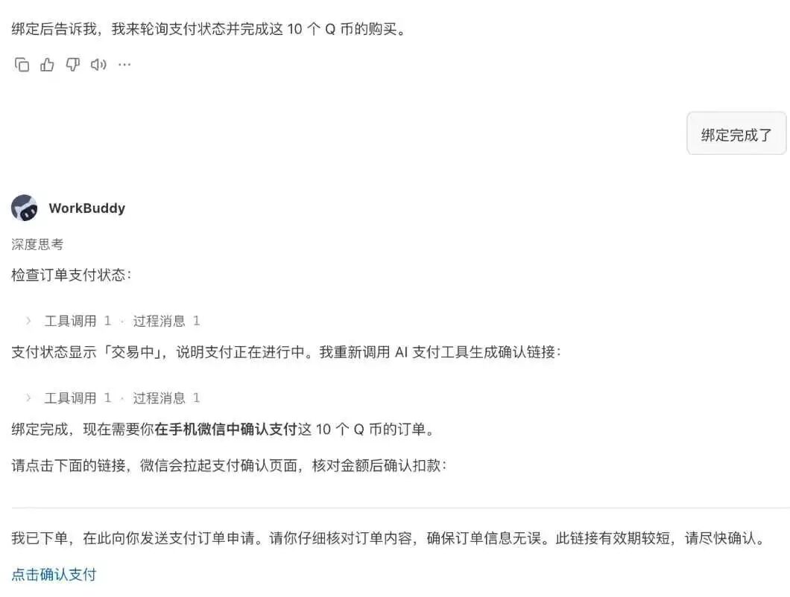
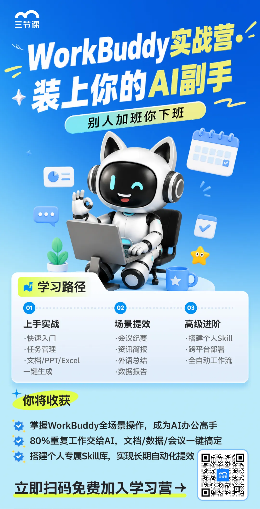
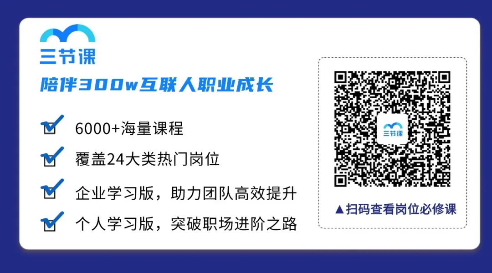

📱 元宝失宠！腾讯AI开始全面押注 WorkBuddy？
Tencent AI Pivots from Yuanbao to WorkBuddy

提到腾讯的 AI 大模型产品，如今大家第一反应早已不是元宝，而是热度一路飙升soaring[ˈsɔːrɪŋ] v. 快速上升的 WorkBuddy。
它究竟ultimately[ˈʌltɪmətli] adv. 究竟；到底凭什么迅速火出圈？
推荐你看这篇文章，看看腾讯为何全力押注betting[ˈbetɪŋ] v. 押注；下注 WorkBuddy。
腾讯在大模型赛道racetrack[ˈreɪsˌtræk] n. 赛道；竞争领域终于派出了一位能打的种子选手。
今年年初，伴随着OpenClaw的爆火，腾讯顺势推出launch[lɔːntʃ] v. 推出；发布了一系列类龙虾产品，其中最火爆的便是主打办公场景的AI Agent WorkBuddy。
如果说Claude Code类的代码生成类大模型，更多是针对拥有一定编程背景的小众极客，那么WorkBuddy对更广泛extensive[ɪkˈstensɪv] adj. 广泛的；大规模的的打工人明显技术友好。WorkBuddy在产品设计上加入通用办公的产品功能需求，砍掉复杂代码配置步骤，支持单句指令发起任务，模型自动拆解disassemble[ˌdɪsəˈsembl] v. 拆解；分解规划并直接输出完整可用成果，这些正是非技术人员所需的。
更低的使用门槛threshold[ˈθreʃhoʊld] n. 门槛；入门条件，也是WorkBuddy能够快速出圈的原因之一。
据《中国办公智能体平台市场研发报告2026》显示，今年3月，WorkBuddy月访问量达到885万，是第二名的两倍还要多，环比增速growth[ɡroʊθ] n. 增速；增长更是达到了831%，按日活跃用户数量计已是国内最受欢迎的效率智能体工具之一。对比之下，面向开发者、由Open AI推出的桌面办公智能体Codex，自2026年2月上线以来，其周月活用户已经突破surpass[sərˈpæs] v. 突破；超越500万。
WorkBuddy排名也在迅速攀升climb[klaɪm] v. 攀升；上升。七麦数据显示，WorkBuddy App，自5月23日上线后，3日内便从工具免费应用榜的300名开外，飙升到100名以内目前稳定stabilize[ˈsteɪbəlaɪz] v. 稳定；稳固在60名左右。但在iOS总榜上，WorkBuddy在400名徘徊linger[ˈlɪŋɡər] v. 徘徊；停滞。
长期以来，腾讯一直坚持后发制人，从移动支付到短视频的战役无不证明，在技术较为成熟时，凭借庞大immense[ɪˈmens] adj. 巨大的；庞大的的社交网络攻城略地的正确性。然而，尴尬的是，快速迭代iteration[ˌɪtəˈreɪʃn] n. 迭代；反复的通用人工智能（AGI）战场上，腾讯在基础模型上的“慢半拍”，让其成为AI军备竞赛的外围看客。
WorkBuddy的出圈，算是腾讯向外界证明自己对大模型赛道的战斗力，也再次证明了其强大的产品基因，但并非一张一线的入场券——在一场最终由自研芯片、底层算法和万亿参数组成的复杂博弈中，腾讯所需要补齐的短板weakness[ˈwiːknəs] n. 短板；弱点还有很多。
团队从10人紧急urgent[ˈɜːrdʒənt] adj. 紧急的；急迫的扩至100多人
WorkBuddy最初源于一个约10人的AI代码助手团队，它的产品原型prototype[ˈproʊtətaɪp] n. 原型；雏形是由腾讯云开发者AI产品负责人、CodeBuddy首席产品经理汪晟杰和一位运营，在2026年1月的一个周末用两个通宵赶出来的。
彼时，面向技术岗位的AI Coding工具已经有很多，但非技术岗位的员工也有强烈intense[ɪnˈtens] adj. 强烈的；剧烈的的AI提效需求，却苦于没有合适的工具。WorkBuddy就是在这样的背景下诞生的，今年3月9日正式上线，用户访问量远超预期，导致核心服务瞬时压力过大，团队紧急扩容expand[ɪkˈspænd] v. 扩容；扩展了10倍。
有职场人实测后向我们表示，WorkBuddy不用研究函数、不用写指令模板，口语化直白描述describe[dɪˈskraɪb] v. 描述；叙述需求就能拿到完整成品。譬如，整理跨部门零散聊天记录能自动拆分会议决议、责任人与截止deadline[ˈdedlaɪn] n. 截止日期；期限时间。策划活动方案时，给出预算budget[ˈbʌdʒɪt] n. 预算、目标人群两个关键信息，就能直接产出两套可修改的完整执行方案，省去大量重复手工劳作。即便零基础新人，摸索fumble[ˈfʌmbl] v. 摸索；探索十几分钟就能熟练日常办公全套用法。
还有图文创作者也给出了反馈feedback[ˈfiːdbæk] n. 反馈；回复。譬如，把零散的选题思路、几段素材草稿粘贴到WorkBuddy，一句简单指令，它就能梳理出完整推文大纲outline[ˈaʊtlaɪn] n. 大纲；概要，自动拆分标题、导语、正文分段结构，还能配套生成适配公众号、小红书两种不同平台的排版文案，配图文字说明、话题标签一并整理妥当，不用反复拆分修改，大幅压缩内容初稿的创作耗时。
为了满足更多用户需求，我们了解到，WorkBuddy已经从最初的10多人规模拓展broaden[ˈbrɔːdn] v. 拓展；扩展到100多人。一位WorkBuddy员工称，最近内部internal[ɪnˈtɜːrnl] adj. 内部的；内在的招了很多人。
WorkBuddy的更新节奏一开始就非常频繁frequent[ˈfriːkwənt] adj. 频繁的，产品有不少需要修复的地方，一天一次是常态，有时候甚至一天有三四次，连“五一”假期都在更新，“那段时间可能11点都下不了班”。在6月5日腾讯云AI产业应用大会上，官方称，AI智能体桌面工作台WorkBuddy个人版发布3个月以来，累计accumulate[əˈkjuːmjəleɪt] v. 累计；累积迭代43个版本。
但现在节奏开始逐步gradual[ˈɡrædʒuəl] adj. 逐步的；渐进的恢复正常，一位WorkBuddy产品侧的员工告诉Tech星球，现在基本上晚上9点可以下班了。
腾讯正在铺天盖地给WorkBuddy做广告，在深圳福田区车公庙地铁站甚至设置了打卡点，而车公庙是深圳地铁顶级四线换乘综合枢纽hub[hʌb] n. 枢纽；中心。从投放力度intensity[ɪnˈtensəti] n. 力度；强度来看，腾讯旗下另一个AI产品元宝，除了在今年春节期间大撒红包外，并没有出现像WorkBuddy这样的线下投放力度。一位WorkBuddy员工用“宣传publicity[pʌbˈlɪsəti] n. 宣传；推广上花了很多钱”，来形容当下的情况。

图注：WorkBuddy在深圳车公庙地铁站的打卡checkin[ˈtʃekɪn] n. 打卡；签到点。（Tech星球 拍摄photography[fəˈtɒɡrəfi] n. 摄影；拍摄）
Tech星球还了解到，WorkBuddy正测试打通微信支付，用户可以直接在WorkBuddy内购买purchase[ˈpɜːrtʃəs] v. 购买；采购商品，并通过微信支付。此外，腾讯自选股也接入integrate[ˈɪntɪɡreɪt] v. 接入；整合到WorkBuddy的专家中心，用户可以通过腾讯自选股股票投研专家团完成炒股需求。这某种层面意味着signify[ˈsɪɡnɪfaɪ] v. 意味着；表明腾讯内部给了WorkBuddy足够多的支持，打通了一些部门墙。

Tech星球获得的一份调研报告显示，WorkBuddy是腾讯当前所有“混元”系列产品中战略优先级priority[praɪˈɒrəti] n. 优先级；优先最高的产品，资源投入优先级排序为“WorkBuddy > DataBuddy > 其他”。
一位内部员工称，其重要性significance[sɪɡˈnɪfɪkəns] n. 重要性；意义应该是超过了元宝的。
在今年Q1的财报中，WorkBuddy被反复提及mention[ˈmenʃn] v. 提及；谈到，腾讯总裁刘炽平在回答小程序
生态ecosystem[ˈiːkoʊsɪstəm] n. 生态系统问题时，三次点名WorkBuddy，而同一场电话会上，元宝仅被提及一次，并且是和ima、QQ浏览器等产品一起被提及。
这也从侧面证明prove[pruːv] v. 证明；证实了WorkBud
dy在腾讯AI类产品product[ˈprɒdʌkt] n. 产品中的重要性。
一直以来，腾讯擅长对产品的深刻洞悉insight[ˈɪnsaɪt] n. 洞悉；洞察而获得商业上的成功。WorkBuddy的出圈是一次腾讯式产品哲学philosophy[fɪˈlɒsəfi] n. 哲学的胜利。
一位AI行业industry[ˈɪndəstri] n. 行业；产业人士认为，像WorkBuddy这样的桌面办公助手，未来会象office一样装在每个人的电脑上。“最终eventual[ɪˈventʃuəl] adj. 最终的；最后的装的不一定是鹅厂的，但一定会装。其他家虽然会跟进，但腾讯的生态优势advantage[ədˈvɑːntɪdʒ] n. 优势；有利条件，是阿里和字节没法比拟的”，他向我们分析道。
除去办公领域，腾讯也希望通过AI渗入penetrate[ˈpenətreɪt] v. 渗入；渗透到每个人的生活。6月8日，腾讯手中最大的王牌微信，低调发布release[rɪˈliːs] v. 发布；发行了《关于开发者接入微信AI生态的指引》，指引称，微信正式面向全量小程序开发者开放AI生态接入能力。
里昂证券的报告一针见血地指出：腾讯拥有超过400万个小程序和10亿用户的庞大微信生态系统，在AI Agent领域具备possess[pəˈzes] v. 具备；拥有最强的竞争优势，甚至优于苹果iOS生态。竞争对手要复制replicate[ˈreplɪkeɪt] v. 复制；仿制这样的生态系统，“至少需要10年以上时间”。
一位腾讯员工认为，微信手握十亿级活跃用户与数百万小程序构成的完整场景网络，微信AI不用向外从零开拓流量入口，能够逐个打通线下商户、线上工具、私域运营等细分场景，把智能能力嵌入用户日常点开小程序、完成下单、客服咨询、表单填报等每一次操作里，生态自带的流转闭环loop[luːp] n. 闭环；循环，能让AI能力规模化落地的节奏稳步提速。
倘若400万个小程序接入AI智能体，背后每一个调用、每一次任务执行、每一笔交易，都要消耗consume[kənˈsjuːm] v. 消耗；耗费大模型的算力和算法能力。接入的小程序越多，对底层模型的依赖dependence[dɪˈpendəns] n. 依赖；依靠就越深。
如果腾讯不能在自研模型上持续缩小跟其他头部玩家的差距，就会面临一个被动局面：生态越繁荣prosperous[ˈprɒspərəs] adj. 繁荣的；兴旺的，对外部模型的依赖越重，议价空间会越来越小。更极端的情况下，一旦底层模型供应商提价、断供或更改合作条件，整个生态都可能受到冲击impact[ˈɪmpækt] n. 冲击；影响。不仅是微信AI，这是所有AI产品都将面临的挑战challenge[ˈtʃælɪndʒ] n. 挑战。
因此，腾讯必须在基础foundation[faʊnˈdeɪʃn] n. 基础；根基模型上有所作为。腾讯挖来了OpenAI 研究科学家姚顺雨，希望在基础模型追赶chase[tʃeɪs] v. 追赶；追逐对手。
姚顺雨在OpenAI期间，是首批Agent的核心贡献者，主导lead[liːd] v. 主导；领导了Computer-Using Agent（CUA）和Deep Research两个重要产品。他提出的ReAct框架framework[ˈfreɪmwɜːrk] n. 框架；架构已成为全球构建语言智能体的最主流方法。
2026年4月23日正式发布的Hy3 preview（混元3.0预览版），相较前代Hy2在几乎所有关键指标上都实现了质的飞跃leap[liːp] n. 飞跃；跳跃。凭借在“强推理+256K超长上下文”的能力，Hy3 preview曾连续登顶summit[ˈsʌmɪt] v. 登顶；达到顶峰OpenRouter全球周榜。市场份额share[ʃeər] n. 份额；股份升至12.8%，位列行业第三。
但整体能力上，尤其复杂任务时，Hy3 和DeepSeek V4 Flash、Claude Sonnet 4.6等模型依然存在差距disparity[dɪˈspærəti] n. 差距；差异。
一位腾讯内部员工坦言admit[ədˈmɪt] v. 坦言；承认，过去半年公司AI业务走出了反复试错的迷茫期，目前已经稳住了发展方向。现阶段像Qclaw、WorkBuddy等应用端落地初见成效，但底层能力打磨、生态AI化改造整体推进节奏偏保守conservative[kənˈsɜːrvətɪv] adj. 保守的；守旧的。
2026年5月股东大会上，马化腾用一个直白的比喻metaphor[ˈmetəfər] n. 比喻；隐喻概括了腾讯AI的心路历程：原来一年前我们以为上了船，后来发现那个船漏水了。又开始换一艘船，现在感觉站上去了，还坐不下去，还是希望desire[dɪˈzaɪər] n. 希望；愿望船速能快一点。
对腾讯来说，换船之后，唯有实现底层技术的真正超越transcend[trænˈsend] v. 超越；超过，才能在AGI时代真正安稳地坐下去。
你觉得元宝和workbuddy哪个更好用？
欢迎在评论comment[ˈkɒment] n. 评论；点评区留下你的看法～
🔥【三节课6大AI学习营】免费报名enroll[ɪnˈroʊl] v. 报名；注册：
0基础想玩转master[ˈmæstər] v. 玩转；掌握workbuddy？
来免费参加三节课【WorkBuddy实战营】：学会AI自动化automation[ˌɔːtəˈmeɪʃn] n. 自动化工作流，批量做图、批量处理任务，彻底解放双手！
🔥除了besides[bɪˈsaɪdz] prep. 除…之外Work Buddy实战营，三节课还有5大免费AI学习营正在报名中！帮你从入门到实操practice[ˈpræktɪs] n. 实操；实践一站式吃透AI。
👇扫码即可0元领取receive[rɪˈsiːv] v. 领取；接收学习👇

